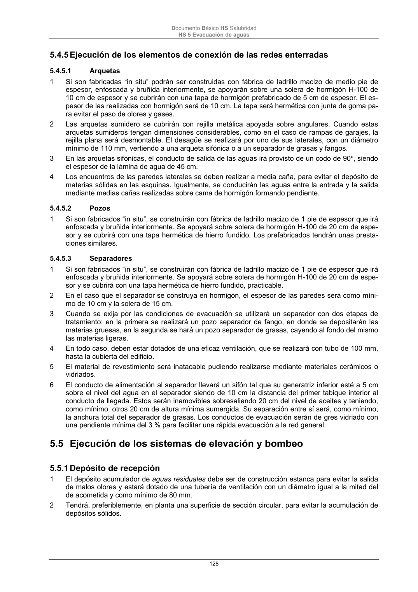

DB-HS Salubridad · edición 2022-06-14 · capa oficial
Documento DB-HS-oficial · SHA-256 del PDF 68df3caacc95f71aee2ec1ba7b2c65ae66155c21e3a8785521b8fdd4fd640d3b
Copia fiel del PDF fuente · Fuente oficial
Ficha de la disposición en la fuente oficial
Formatos: JSON del segmento · Markdown
5.5 Ejecución de los sistemas de elevación y bombeo 5.5.1 Depósito de recepción 5.5.1 Depósito de recepción 1 El depósito acumulador de aguas residuales debe ser de construcción estanca para evitar la salida de malos olores y estará dotado de una tubería de ventilación con un diámetro igual a la mitad del de acometida y como mínimo de 80 mm. 2 Tendrá, preferiblemente, en planta una superficie de sección circular, para evitar la acumulación de depósitos sólidos. Documento Básico HS Salubridad HS 5 Evacuación de aguas 129 3 Debe quedar un mínimo de 10 cm entre el nivel máximo del agua en el depósito y la generatriz infe- rior de la tubería de acometida, o de la parte más baja de las generatrices inferiores de las tuberías de acometida, para evitar su inundación y permitir la circulación del aire. 4 Se dejarán al menos 20 cm entre el nivel mínimo del agua en el depósito y el fondo para que la boca de aspiración de la bomba esté siempre sumergida, aunque esta cota podrá variar según re- quisitos específicos del fabricante. 5 La altura total será de al menos 1 m, a la que habrá que añadir la diferencia de cota entre el nivel del suelo y la generatriz inferior de la tubería, para obtener la profundidad total del depósito. 6 Cuando se utilicen bombas de tipo sumergible, se alojarán en una fosa para reducir la cantidad de agua que queda por debajo de la boca de aspiración. La misma forma podrá tener el fondo del tan- que cuando existan dos cámaras, una para recibir las aguas (fosa húmeda) y otra para alojar las bombas (fosa seca). 7 El fondo del tanque debe tener una pendiente mínima del 25 %. 8 El caudal de entrada de aire al tanque debe ser igual al de la bomba.
